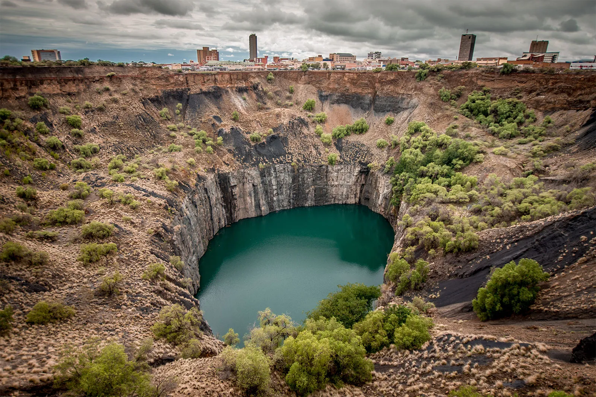
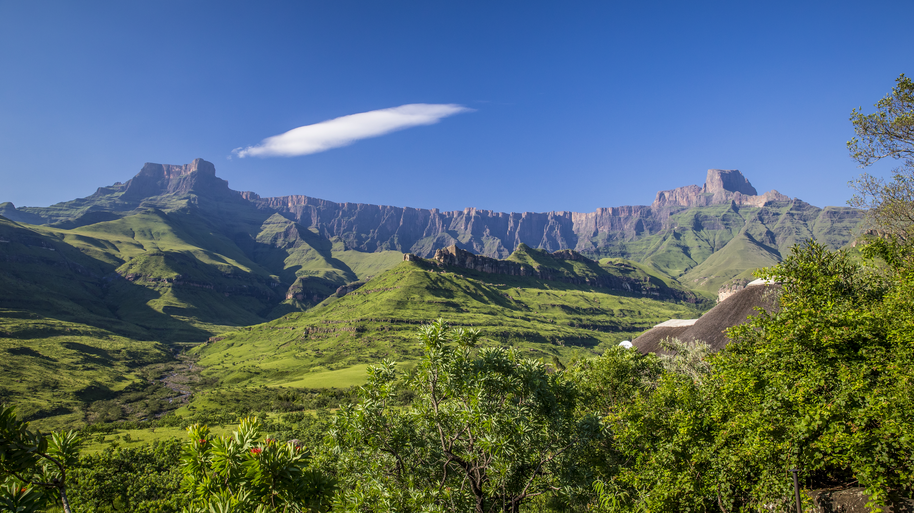
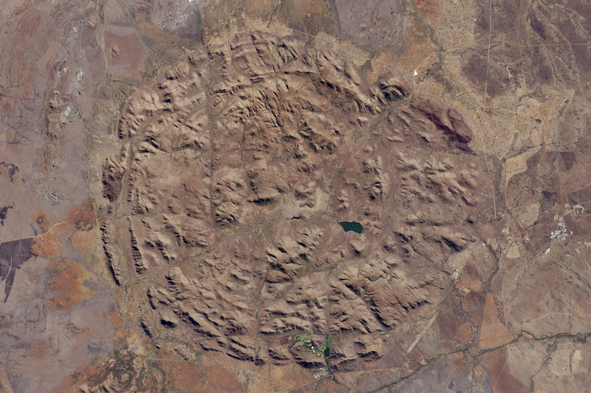

Tectonic Setting and Plate Boundaries
South Africa is pretty much in the middle of the African Plate, well away from any active plate boundaries. The nearest one is the Southwest Indian Ridge, a divergent boundary sitting about 4,000 kilometers south of Cape Town. The East African Rift does reach into Mozambique and Malawi near the northeastern border and causes some seismic activity in the region — but South Africa itself mostly doesn't feel it.
Rock and Mineral Resources
South Africa is one of the most mineral-rich countries in the world. Mining accounts for around 7–8% of GDP and employs over 450,000 people directly (EBSCO, 2025). The top exports are platinum, gold, and coal, mostly going to China, the US, Japan, and Europe (Observatory of Economic Complexity, 2026).
Gold — The Witwatersrand Basin
The Witwatersrand Basin under Johannesburg is the biggest gold deposit ever found. Gold was first discovered there in 1886, and by 1970 South Africa was pulling out over 1,000 metric tons a year — more than two-thirds of global supply at the time. All up, the basin has produced about half of all the gold ever mined in human history (Department of Mineral Resources and Energy, n.d.).
Platinum Group Metals — The Bushveld Igneous Complex
The Bushveld Igneous Complex has about 80% of the world's known platinum group metal reserves, spread across roughly 66,000 square kilometers. It formed around 2 billion years ago when magma slowly cooled underground in layers, concentrating platinum, palladium, rhodium, and other metals as it did.
Diamonds — Kimberlite Pipes
South Africa's diamonds come from kimberlite pipes — old volcanic vents that blasted material up from deep in the mantle. The Big Hole in Kimberley is probably the most famous one: about 215 meters deep and 463 meters wide, it's the largest hand-dug excavation on Earth. De Beers got its start there in 1888.

Earthquakes
1969 Ceres–Tulbagh Earthquake
The worst earthquake in South Africa's recorded history hit on September 29, 1969, near Ceres and Tulbagh in the Western Cape. It was magnitude 6.3, struck late at night, and brought down older masonry buildings on Church Street in Tulbagh — nine people were killed and around 3,500 buildings were damaged (The Conversation, 2019). The quake was linked to movement along the Worcester Fault. After that, the Council for Geoscience put together a national seismic monitoring network, and building code SANS 10160 now covers construction requirements in earthquake-prone areas (University of the Witwatersrand, 2019; Council for Geoscience, 2026).
Mountain Ranges
Drakensberg
The Drakensberg runs along South Africa's eastern edge through KwaZulu-Natal and the Eastern Cape, forming the border with Lesotho. The highest point in South Africa is Injasuti at 3,408 meters. The range is topped by basalt laid down during Gondwana-era eruptions about 180 million years ago. It feeds the Tugela, Orange, and Vaal rivers, has thousands of San rock art sites scattered across it, and became a UNESCO World Heritage Site in 2000. It also acted as a natural barrier — Lesotho stayed independent largely because the mountains made it too hard to invade (Journeys by Design, n.d.).

Cape Fold Mountains
The Cape Fold Belt is a chain of parallel ridges across the Western and Eastern Cape. They formed 280–250 million years ago when Gondwana's plates compressed and folded the sedimentary rock into long ridges. Table Mountain is part of the same system and was named one of the New Seven Wonders of Nature in 2011. The mountains create a rain shadow effect — the southwestern Cape gets a Mediterranean climate while the Karoo to the north stays dry. The passes through the ridges were also important trade and military routes for most of South African history.

Volcanic Features and History
There are no active volcanoes on the South African mainland (British Geological Survey, 2021), but there are some interesting features left over from ancient volcanic activity.
Kimberlite Pipes
South Africa had kimberlite eruptions roughly 1.6 billion years ago and again around 90 million years ago. These blasted magma up from the mantle, and diamonds came with it. The conduits left behind are called kimberlite pipes — they're the source of most of South Africa's diamonds. Every one of them is extinct today.
Pilanesberg
The Pilanesberg in North West Province is a circular extinct volcanic complex about 25 kilometers across. It formed around 1.2 billion years ago when magma pushed through ring-shaped cracks in the crust. The circular ridges are clearly visible from the air — it almost looks like a crater. Today it's a Big Five game reserve, but the distinctive circular layout is entirely geological.

Marion Island
Marion Island, out in the southern Indian Ocean, is South African territory and the only active volcano the country has. It's a shield volcano that erupted in 2004 and again in 2011, rising about 1,230 meters above sea level. There's a research station there but no permanent residents (Global Volcanism Program, n.d.).
Multimedia
The video below gives a pretty good overview of southern Africa's geology — tectonics, mineral resources, and the major geographic features covered on this page (YouTube, 2023a).
YouTube. (2023a, July 20). A brief overview of the geology of Southern Africa [Video]. YouTube. https://www.youtube.com/watch?v=AqNPfKrUzLk